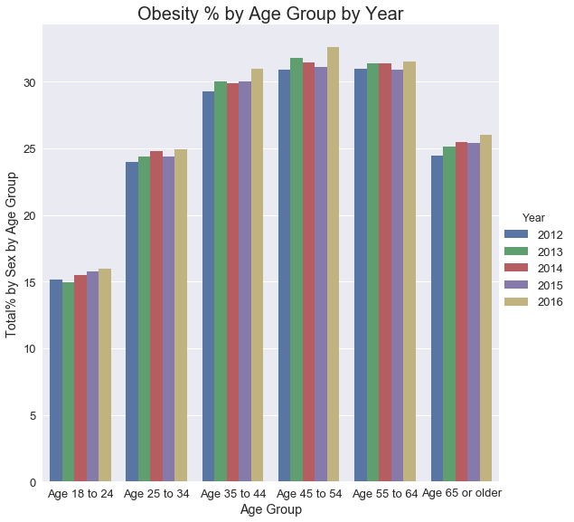

We selected 2012-2016 as our range of years to see if we could draw any conclusions.
Five years is half a decade and we thought it would simply make sense as something we could
include as part of a short presentation to our class.
Selecting five years to work with and laying out the data like this did seem to present
an interesting set of charts with which anyone could make some kind of correlation.